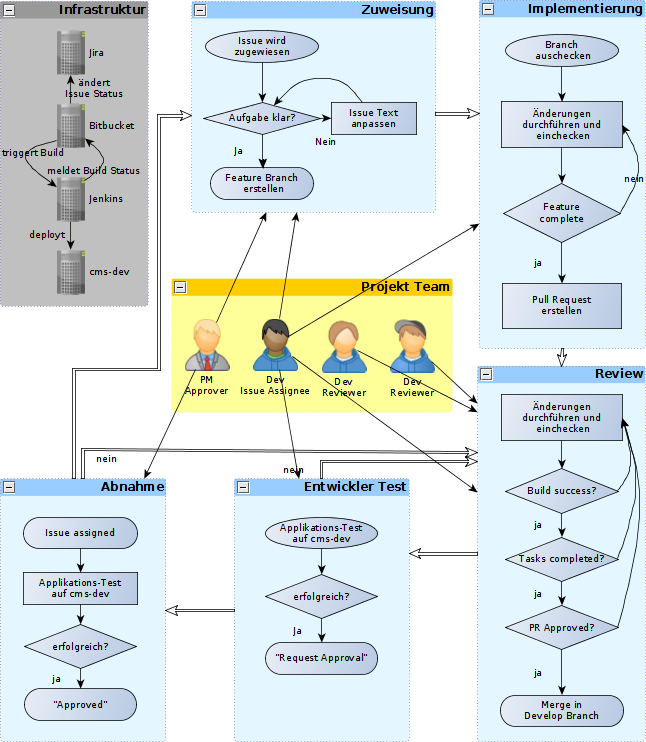

Der AAV Workflow
Umsetzung von AAV Issues
Erstellt von Daniel Hiller / @dhill3r
Workflow Übersicht

Infrastruktur

Bitbucket und Jira sind verbunden

Ereignisse in Bitbucket verändern den Status der Jira-Issues
Voraussetzung: Issue ID muss im Namen des Features Branches vorkommen
Beispiel: Erstellen eines Feature Branches verändert den Issue Status auf In Progress
Bitbucket und Jira sind verbunden
| Aktion | Statusänderung Issue CMS-42 |
Branch erstellt feature/CMS-42-sth-cool
|
"Open" -> "In Progress" |
Pull Request erstellt feature/CMS-42-sth-cool
|
"In Progress" -> "In Review" |
Bitbucket und Jenkins sind verbunden
Commits in Bitbucket lösen Builds im Jenkins aus
Jenkins Build Status wird an Bitbucket zurückgemeldet
Branch Modell im Projekt Wimbledon
Wimbledon hat drei Haupt-Branches:
| Name | Zweck |
| master | releases, live bugfixes |
| develop | main development line |
| staging | pre release demo |
Pull Request, please!
Die Umsetzung eines Issues wird über einen Pull Request in develop übernommen.
Wird der Pull-Request gemergt, wird die aktuelle Version von develop vom Jenkins gebaut.
Deployment auf cms-dev

War der Build erfolgreich, wird die Version auf cms-dev deployt.
Die Umsetzung des Issues kann über wimbledon-dev getestet werden.